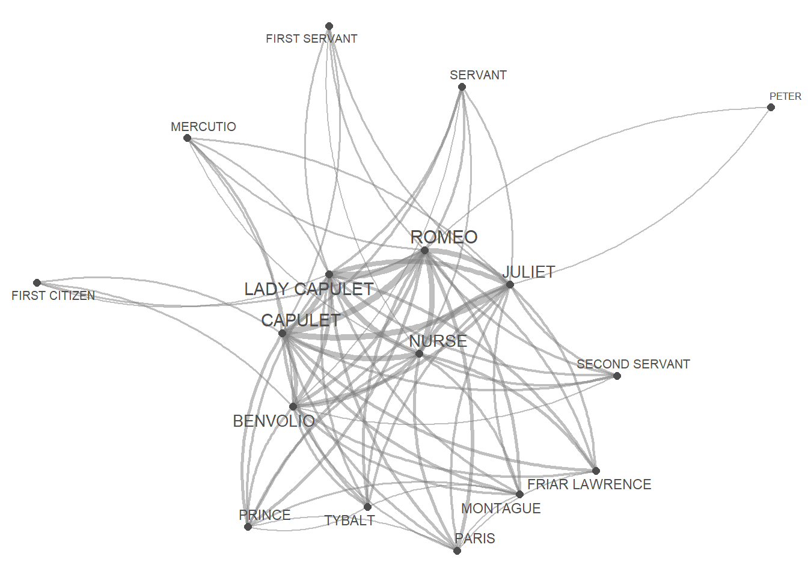
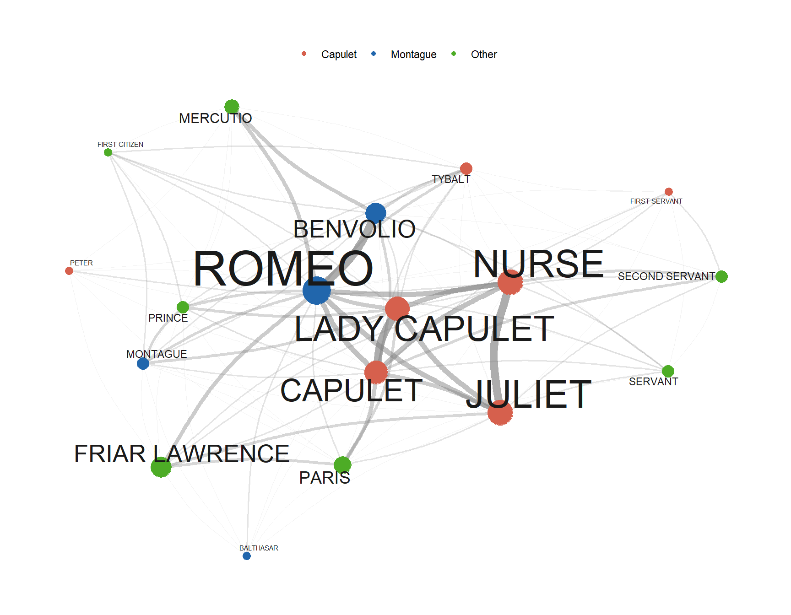
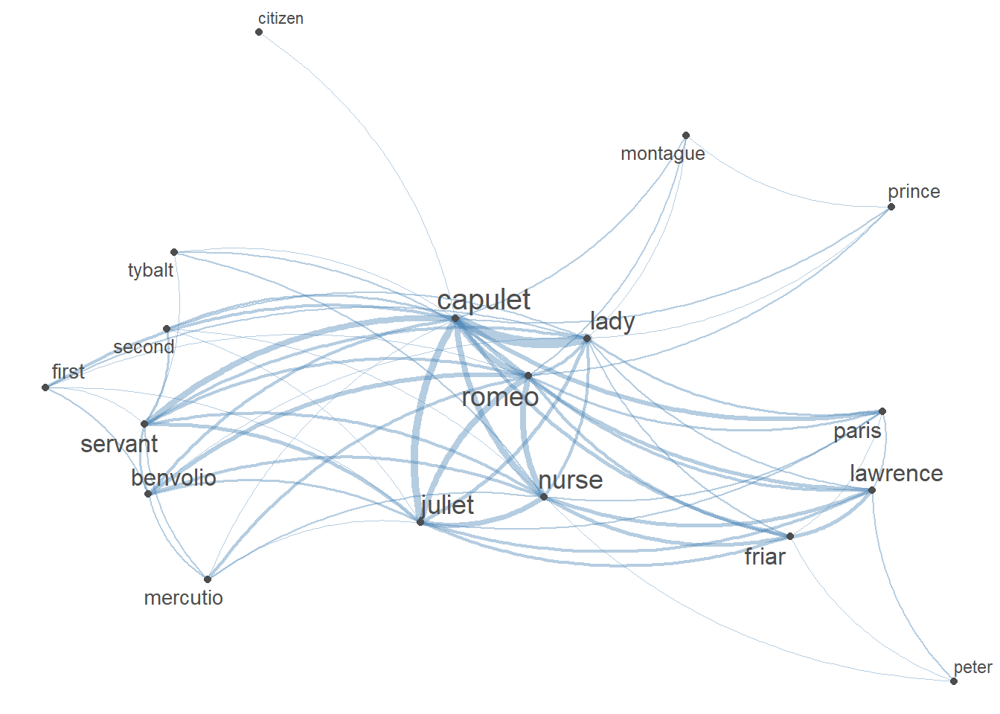
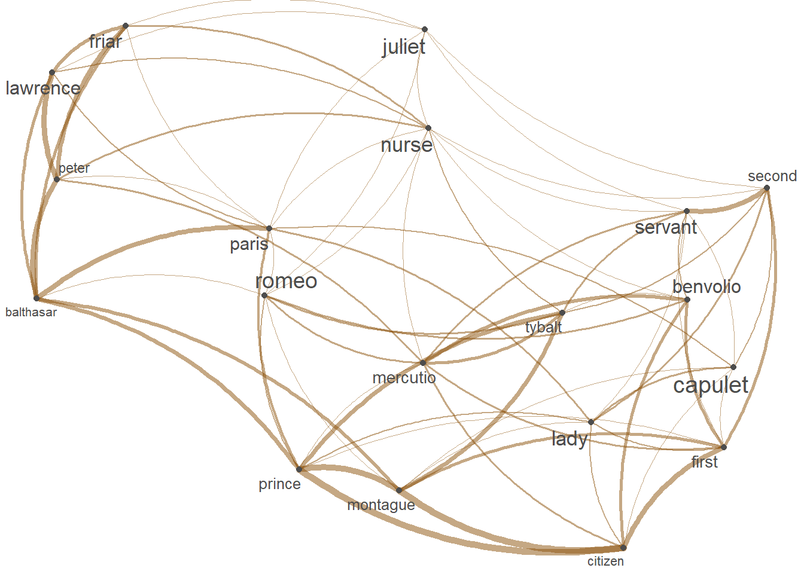

Network Analysis using R

Introduction

This tutorial introduces network analysis in R. Networks are a powerful method for visualising relationships among entities such as literary characters, co-authors, words, or speakers. Network analysis goes beyond visualisation: it is a formal technique for uncovering patterns and structures within complex relational systems.
In essence, network analysis represents relationships as nodes (the entities) connected by edges (the relationships between them). This representation provides a unique perspective for understanding interactions and dependencies within data — one that neither regression nor clustering can easily capture, because the unit of analysis is the relationship itself rather than individual observations.
This tutorial is aimed at beginners and intermediate R users. It showcases how to construct, visualise, and statistically describe networks built from textual data. The running example throughout is the character co-occurrence network in William Shakespeare’s Romeo and Juliet: two characters are connected if they appear in the same scene, and the edge weight reflects how often this happens. A second worked example — a word co-occurrence network — demonstrates how the same pipeline transfers directly to purely linguistic data. The tutorial concludes with interactive network visualisation using visNetwork, which allows users to explore networks in a browser by dragging nodes, hovering for information, and zooming in and out.
Prerequisite Tutorials
Before working through this tutorial, we suggest you familiarise yourself with:
- Getting Started with R — R objects, basic syntax, RStudio orientation
- Loading and Saving Data in R — reading files, working with paths
- Handling Tables in R — data frames,
dplyr, pipes - String Processing in R — character manipulation (useful for the word network section)
Learning Objectives
By the end of this tutorial you will be able to:
- Explain what a network is in formal terms and distinguish directed from undirected, and weighted from unweighted networks
- Read and interpret an adjacency matrix and an edge list
- Build a co-occurrence matrix from tabular long-format data using
crossprod()andtable() - Construct node attribute tables and edge lists from raw data
- Visualise a network quickly using
quanteda.textplots::textplot_network() - Build fully customisable static
ggraphnetworks with node colours, sizes, and edge weights - Calculate and interpret degree, betweenness, closeness, eigenvector centrality, and PageRank
- Compile, compare, and visualise multiple centrality measures in a single summary
- Detect communities in a network using the Louvain algorithm and interpret the results
- Build and visualise a word co-occurrence / collocation network from a text corpus
- Create interactive network visualisations using
visNetwork - Export network plots, edge lists, node tables, and igraph objects for reuse
Citation
Martin Schweinberger. 2026. Network Analysis using R. The Language Technology and Data Analysis Laboratory (LADAL), The University of Queensland, Australia. url: https://ladal.edu.au/tutorials/network_analysis/network_analysis.html (Version 3.1.1). doi: 10.5281/zenodo.19332917.
This tutorial builds on a tutorial on plotting collocation networks by Guillaume Desagulier, a tutorial on network analysis offered by Alice Miller from the Digital Observatory at the Queensland University of Technology, and this tutorial by Andreas Niekler and Gregor Wiedemann.
What Is Network Analysis?
Section Overview
What you will learn: The core vocabulary of network analysis — nodes, edges, directed vs. undirected, weighted vs. unweighted, adjacency matrices; why network analysis is well-suited to linguistic and literary data; the distinction between adjacency matrix and edge list representations; and what global graph properties (density, diameter, transitivity) tell us about a network’s architecture
Graphs, Nodes, and Edges
A network (or graph in mathematics) consists of two components: a set of nodes (also called vertices) representing entities, and a set of edges (also called links or arcs) representing relationships between pairs of those entities. Formally, a graph is written as \(G = (V, E)\), where \(V\) is the set of vertices and \(E \subseteq V \times V\) is the set of edges.
In linguistics and literary studies, networks can represent a wide variety of relational phenomena:
| Domain | Nodes | Edges | Typical edge weight |
|---|---|---|---|
| Literary characters | Characters in a play or novel | Appear in the same scene/chapter | Number of shared scenes |
| Collocation | Words in a corpus | Co-occur within a context window | Co-occurrence frequency or PMI |
| Syntactic dependency | Words in a sentence | Syntactic dependency relations | — (usually unweighted) |
| Co-authorship | Researchers | Wrote a paper together | Number of joint papers |
| Language contact | Languages or dialects | Share lexical/structural features | Similarity score |
| Social network | Speakers | Regular interaction | Frequency of contact |
The choice of what counts as a node and what counts as an edge is a theoretical decision that must be justified by the research question. The same underlying data can yield quite different networks depending on these choices.
Directed and Undirected Networks
Networks can be directed or undirected, depending on whether the edges carry orientation information.
In a directed network (also called a digraph), every edge has a source and a target. Directed edges indicate asymmetric relationships: the fact that word A precedes word B in a sequence does not imply that B precedes A. In directed networks, we distinguish the in-degree (number of incoming edges) from the out-degree (number of outgoing edges) of each node.
In an undirected network, edges are symmetric: if node A is connected to node B, then B is connected to A by the same edge. Character co-occurrence is a naturally undirected relationship: if Romeo appears in a scene with Juliet, then Juliet appears in that scene with Romeo. Most co-occurrence networks — whether character-level or word-level — are therefore undirected.
When to Use Directed vs. Undirected
Use directed networks when the relationship is inherently asymmetric: citation (A cites B does not mean B cites A), word order (A precedes B), syntactic dependency (head to dependent), or social influence (A mentions B). Use undirected networks when the relationship is symmetric by nature, or when directionality is not recorded in the data.
Weighted and Unweighted Networks
Edges can carry a weight — a numerical value representing the strength, frequency, or magnitude of the relationship. In a character co-occurrence network, the weight is the number of scenes in which two characters appear together. In a word co-occurrence network, the weight is the number of times two words co-occur within a context window.
Unweighted networks treat all edges as equally present (weight = 1) or absent (weight = 0). They are appropriate when frequency or strength is not meaningful or not recorded.
Weighted networks preserve gradient information. The four combinations of directed/undirected and weighted/unweighted give rise to four basic network types:
| Unweighted | Weighted | |
|---|---|---|
| Undirected | Friendship (present/absent), binary co-occurrence | Character co-occurrence, word co-occurrence |
| Directed | Citation (presence/absence), follow (Twitter) | Retweet counts, word transition probabilities |
The Adjacency Matrix and the Edge List
Any network can be represented in two equivalent ways.
The adjacency matrix \(A\) is a square matrix of size \(|V| \times |V|\), where \(A_{ij}\) equals the edge weight from node \(i\) to node \(j\) (or 1 if unweighted), and 0 if no edge exists. For an undirected network, \(A\) is symmetric (\(A_{ij} = A_{ji}\)). The co-occurrence matrix we build in Data Preparation is exactly an adjacency matrix.
The edge list is a two- or three-column table in which each row records one edge: the source node, the target node, and optionally the edge weight. Edge lists are more memory-efficient than adjacency matrices for sparse networks (where most pairs of nodes are not connected). A vocabulary of 10,000 word types, for example, would require a 10,000 × 10,000 = 100,000,000-cell adjacency matrix, but the same data as an edge list would have only as many rows as there are non-zero co-occurrences.
Both representations carry identical information and can be converted into each other. igraph works with both via graph_from_adjacency_matrix() and graph_from_data_frame().
Key Global Network Properties
Beyond individual node statistics, networks have global structural properties that characterise their overall architecture:
Density is the proportion of all possible edges that are actually present. A complete graph (every node connected to every other) has density 1; a sparse network has density close to 0. Most real-world networks are sparse.
Diameter is the length of the longest shortest path between any two nodes in the network. A small diameter means that any two nodes can be reached in few steps — this is the structural basis of the “small world” phenomenon.
Clustering coefficient (or transitivity) measures how often two nodes that share a common neighbour are also connected to each other. High transitivity means the network contains many tightly interconnected triangles — characteristic of friendship networks and co-occurrence networks.
Connected components are maximal subgraphs in which every node can reach every other node. A network with one giant component and a few isolated nodes is typical of real-world networks.
Why Network Analysis for Linguistics?
Network methods are particularly well-suited to linguistic data for several reasons. Language is inherently relational: words derive meaning from co-occurrence with other words; characters in a narrative acquire significance through their interactions; speakers in a community are embedded in social networks that shape their linguistic behaviour. Network analysis makes these relational structures explicit, measurable, and comparable across texts, languages, or time periods. It complements frequency-based methods by foregrounding who relates to whom, how centrally, and through which structural position.
Several influential results in computational linguistics and digital humanities rest on network analysis. Mikolov et al. (2013) embed words in vector spaces whose geometry reflects word co-occurrence networks. Moretti (2011) uses character networks to argue that the structural complexity of Shakespeare’s plays increases over his career. Trilcke et al. (2016) demonstrates that network density reliably distinguishes dramatic genre (comedy vs. tragedy). These examples show that network methods yield interpretable, replicable findings rather than merely attractive visualisations.
Exercises: Graph Theory Concepts
Q1. A researcher models Twitter retweet behaviour: User A retweeting User B does NOT imply User B retweets User A. Which network type is most appropriate?
Q2. A co-occurrence matrix for a corpus with 10,000 unique word types would have how many cells?
Setup
Installing Packages
Code
# Run once — comment out after installation
install.packages("checkdown") # interactive check-in questions
install.packages("flextable") # formatted tables
install.packages("GGally") # ggplot2 network extension
install.packages("ggraph") # ggplot2-style network plots
install.packages("igraph") # core network analysis
install.packages("Matrix") # sparse matrix support
install.packages("quanteda") # text analysis and FCM
install.packages("quanteda.textplots") # textplot_network()
install.packages("tidygraph") # tidy interface to igraph
install.packages("tidyverse") # dplyr, ggplot2, tidyr, readr
install.packages("tibble") # tibble data frames
install.packages("ggrepel") # non-overlapping node labels
install.packages("visNetwork") # interactive network visualisationLoading Packages
Code
library(checkdown)
library(flextable)
library(GGally)
library(ggraph)
library(igraph)
library(Matrix)
library(quanteda)
library(quanteda.textplots)
library(tidygraph)
library(tidyverse)
library(tibble)
library(ggrepel)
library(visNetwork)Once the packages are loaded you are ready to work through the tutorial. Each section builds on objects created in Data Preparation, so run that section first before moving to later sections.
Data Preparation
Section Overview
What you will learn: How to load a scene-level character table for Romeo and Juliet; how to transform it into a weighted co-occurrence matrix using crossprod() and table(); how to build a node attribute table and an edge list from the matrix; and how to combine all three into an igraph graph object
Data source: A tab-separated file (tutorials/network_analysis/data/romeo_tidy.txt) recording which characters appear in each subscene of Romeo and Juliet and how many lines they speak.
In network analysis it is essential to have at least one table describing the start and end points of edges — the edge list. A separate node attribute table (e.g. character family, frequency) and an edge attribute table (e.g. weight, type) enrich both the visualisation and the analysis. In the subsections below we build all three from the raw data.
Loading the Data
We load a tab-separated file in which each row records one character’s presence in one subscene, along with the number of lines they speak. This is a long-format (tidy) representation: each observation occupies exactly one row.
Code
net_dat <- read.delim(
"tutorials/network_analysis/data/romeo_tidy.txt",
sep = "\t"
)actscene | person | contrib | occurrences |
|---|---|---|---|
ACT I_SCENE I | BENVOLIO | 24 | 7 |
ACT I_SCENE I | CAPULET | 2 | 9 |
ACT I_SCENE I | FIRST CITIZEN | 1 | 2 |
ACT I_SCENE I | LADY CAPULET | 1 | 10 |
ACT I_SCENE I | MONTAGUE | 6 | 3 |
ACT I_SCENE I | PRINCE | 1 | 3 |
ACT I_SCENE I | ROMEO | 16 | 14 |
ACT I_SCENE I | TYBALT | 2 | 3 |
ACT I_SCENE II | BENVOLIO | 5 | 7 |
ACT I_SCENE II | CAPULET | 3 | 9 |
ACT I_SCENE II | PARIS | 2 | 5 |
ACT I_SCENE II | ROMEO | 11 | 14 |
ACT I_SCENE II | SERVANT | 8 | 3 |
ACT I_SCENE III | JULIET | 5 | 11 |
ACT I_SCENE III | LADY CAPULET | 11 | 10 |
The three columns are: person (character name), scene (subscene identifier), and occurrences (number of lines spoken). Each row records a single character’s appearance in a single subscene. This long-format table is the raw material for building the co-occurrence matrix, the node attribute table, and the edge list.
Building the Co-occurrence Matrix
We use table() to create a character-by-scene indicator matrix, then crossprod() (the cross-product \(X^\top X\)) to produce the symmetric character-by-character co-occurrence matrix. Entry \((i,j)\) records how many scenes characters \(i\) and \(j\) share. Setting the diagonal to zero removes self-co-occurrences.
Code
net_cmx <- crossprod(table(net_dat[1:2]))
diag(net_cmx) <- 0
net_df <- as.data.frame(net_cmx)Persona | BALTHASAR | BENVOLIO | CAPULET | FIRST CITIZEN | FIRST SERVANT |
|---|---|---|---|---|---|
BALTHASAR | 0 | 0 | 1 | 0 | 0 |
BENVOLIO | 0 | 0 | 3 | 2 | 1 |
CAPULET | 1 | 3 | 0 | 1 | 2 |
FIRST CITIZEN | 0 | 2 | 1 | 0 | 0 |
FIRST SERVANT | 0 | 1 | 2 | 0 | 0 |
The matrix is symmetric — it represents an undirected network — and the value in cell \((i, j)\) is the edge weight between characters \(i\) and \(j\). This is the adjacency matrix for the weighted, undirected character co-occurrence network.
Building the Node Attribute Table
The node table records one row per character with any attributes we want to use in the visualisation. Here we compute each character’s total scene frequency and add a family affiliation label:
Code
va <- net_dat |>
dplyr::rename(node = person, n = occurrences) |>
dplyr::group_by(node) |>
dplyr::summarise(n = sum(n))
mon <- c("ABRAM", "BALTHASAR", "BENVOLIO", "LADY MONTAGUE", "MONTAGUE", "ROMEO")
cap <- c("CAPULET", "CAPULET'S COUSIN", "FIRST SERVANT", "GREGORY", "JULIET",
"LADY CAPULET", "NURSE", "PETER", "SAMPSON", "TYBALT")
va <- va |>
dplyr::mutate(type = dplyr::case_when(
node %in% mon ~ "Montague",
node %in% cap ~ "Capulet",
TRUE ~ "Other"
))node | n | type |
|---|---|---|
BALTHASAR | 4 | Montague |
BENVOLIO | 49 | Montague |
CAPULET | 81 | Capulet |
FIRST CITIZEN | 4 | Other |
FIRST SERVANT | 4 | Capulet |
FRIAR LAWRENCE | 49 | Other |
JULIET | 121 | Capulet |
LADY CAPULET | 100 | Capulet |
MERCUTIO | 16 | Other |
MONTAGUE | 9 | Montague |
NURSE | 121 | Capulet |
PARIS | 25 | Other |
PETER | 4 | Capulet |
PRINCE | 9 | Other |
ROMEO | 196 | Montague |
SECOND SERVANT | 9 | Other |
SERVANT | 9 | Other |
TYBALT | 9 | Capulet |
Building the Edge List
We reshape the co-occurrence matrix from wide to long format using tidyr::pivot_longer(), then remove zero-weight pairs:
Code
ed <- net_df |>
dplyr::mutate(from = rownames(net_df)) |>
tidyr::pivot_longer(
cols = -from,
names_to = "to",
values_to = "n"
) |>
dplyr::filter(n > 0)from | to | n |
|---|---|---|
BALTHASAR | CAPULET | 1 |
BALTHASAR | FRIAR LAWRENCE | 1 |
BALTHASAR | JULIET | 1 |
BALTHASAR | LADY CAPULET | 1 |
BALTHASAR | MONTAGUE | 1 |
BALTHASAR | PARIS | 1 |
BALTHASAR | PRINCE | 1 |
BALTHASAR | ROMEO | 2 |
BENVOLIO | CAPULET | 3 |
BENVOLIO | FIRST CITIZEN | 2 |
BENVOLIO | FIRST SERVANT | 1 |
BENVOLIO | JULIET | 1 |
BENVOLIO | LADY CAPULET | 2 |
BENVOLIO | MERCUTIO | 4 |
BENVOLIO | MONTAGUE | 2 |
Building the igraph and tidygraph Objects
We combine the edge list and node attribute table into an igraph graph object and wrap it in a tidygraph tbl_graph for use with ggraph:
Code
ig <- igraph::graph_from_data_frame(
d = ed,
vertices = va,
directed = FALSE
)
tg <- tidygraph::as_tbl_graph(ig) |>
tidygraph::activate(nodes) |>
dplyr::mutate(label = name)We inspect the basic global properties of the network:
Code
cat("Nodes: ", igraph::vcount(ig), "\n")Nodes: 18 Code
cat("Edges: ", igraph::ecount(ig), "\n")Edges: 212 Code
cat("Density: ", round(igraph::edge_density(ig), 3), "\n")Density: 1.386 Code
cat("Diameter: ", igraph::diameter(ig), "\n")Diameter: 2 Code
cat("Transitivity: ", round(igraph::transitivity(ig, type = "global"), 3), "\n")Transitivity: 0.765
Exercises: Data Preparation
Q3. In the co-occurrence matrix, what does the value in cell (ROMEO, JULIET) represent?
Q4. Why do we set the diagonal of the co-occurrence matrix to zero before building the network?
Network Visualisation
Section Overview
What you will learn: Two complementary approaches to visualising the same network — a quick quanteda plot for rapid exploration, and a fully customisable ggraph plot for publication-ready figures; how to encode node size, node colour, edge width, and edge transparency as data-driven aesthetics; how layout algorithms position nodes; and the key arguments and customisation options for each approach
Quick Visualisation with quanteda
The quanteda.textplots::textplot_network() function generates a network plot directly from a feature co-occurrence matrix (FCM) with very little code. It is ideal for rapid exploratory work. The trade-off is limited customisation compared to ggraph.
We first convert the data frame to a document-feature matrix (DFM) and then to a feature co-occurrence matrix (FCM):
Code
net_dfm <- quanteda::as.dfm(net_df)
net_fcm <- quanteda::fcm(net_dfm, tri = FALSE)The key arguments of textplot_network() are:
| Argument | Description | Default |
|---|---|---|
x |
An FCM or DFM object | — |
min_freq |
Minimum co-occurrence frequency/proportion for inclusion | 0.5 |
omit_isolated |
Drop nodes that fall below min_freq |
TRUE |
edge_color |
Colour of edges | "#1F78B4" |
edge_alpha |
Opacity of edges (0 = transparent, 1 = opaque) | 0.5 |
edge_size |
Maximum edge thickness | 2 |
vertex_color |
Colour of nodes | "#4D4D4D" |
vertex_size |
Size of nodes | 2 |
vertex_labelsize |
Size of node labels in mm (can be a vector) | 5 |
Code
quanteda.textplots::textplot_network(
x = net_fcm,
min_freq = 0.5,
edge_alpha = 0.5,
edge_color = "gray50",
edge_size = 2,
vertex_labelsize = net_dfm |>
quanteda::convert(to = "data.frame") |>
dplyr::select(-doc_id) |>
rowSums() |>
log(),
vertex_color = "#4D4D4D",
vertex_size = 2
)
Even this quick plot reveals that Romeo, Juliet, and Friar Lawrence occupy prominent central positions. Peripheral characters — servants and musicians — cluster at the edges of the layout with smaller labels.
Fully Customisable Tidy Networks with ggraph
For publication-ready figures and full control over every aesthetic, we use the igraph + tidygraph + ggraph pipeline. This pipeline separates the graph data from the rendering instructions, making it easy to adjust any aspect of the figure without altering the underlying data.
Layout Algorithms
The ggraph() function’s layout argument controls how nodes are positioned in two-dimensional space. Common choices include:
| Layout | Description | Best for |
|---|---|---|
"fr" |
Fruchterman–Reingold force-directed | General purpose; groups connected nodes |
"kk" |
Kamada–Kawai spring model | Emphasises shortest-path distances |
"circle" |
Nodes arranged in a circle | Small networks; periodic structure |
"tree" |
Hierarchical tree layout | DAGs and hierarchical data |
"stress" |
Stress-majorisation | More stable than "fr" across runs |
We use the Fruchterman–Reingold layout ("fr") throughout this tutorial. It is a force-directed algorithm: nodes repel each other like charged particles while edges act as springs pulling connected nodes together. Densely connected subgroups are therefore positioned close to each other. Because the algorithm starts from a random configuration, set.seed() is essential for reproducibility.
The Plot
Code
set.seed(2026)
tg |>
ggraph::ggraph(layout = "fr") +
geom_edge_arc(
colour = "gray50",
lineend = "round",
strength = 0.1,
aes(edge_width = n, alpha = n)
) +
geom_node_point(
aes(color = type),
size = log(va$n) * 2
) +
geom_node_text(
aes(label = label),
repel = TRUE,
point.padding = unit(0.2, "lines"),
size = sqrt(va$n),
colour = "gray10"
) +
scale_edge_width(range = c(0.2, 3)) +
scale_edge_alpha(range = c(0.05, 0.4)) +
scale_color_manual(
values = c("Montague" = "#2166ac",
"Capulet" = "#d6604d",
"Other" = "#4dac26")
) +
theme_graph(background = "white") +
theme(
legend.position = "top",
legend.title = element_blank()
) +
guides(edge_width = "none", edge_alpha = "none")
The layout makes several structural features visible at once: Romeo sits at the junction between the Montague and Capulet clusters, reflecting his central brokering role in the narrative. Friar Lawrence (green) bridges the two family clusters. Peripheral characters — servants, musicians, the Apothecary — appear at the edges of the layout with smaller node sizes.
Customising the ggraph Plot
Several aspects of the plot above are easy to modify:
- Layout: Replace
layout = "fr"with"kk","stress", or"circle"to compare arrangements - Edge geometry: Replace
geom_edge_arc()withgeom_edge_link()(straight lines) orgeom_edge_fan()for multiple edges as separate arcs - Node labels: Replace
geom_node_text()withgeom_node_label()for labelled boxes - Colours: Adjust
scale_color_manual()values to any hex colour codes or named R colours
Exercises: Network Visualisation
Q5. In the ggraph plot, node size is mapped to log(va$n) * 2. What does a larger node indicate?
Q6. Why is set.seed(2026) needed before the ggraph plot but NOT before textplot_network()?
Network Statistics
Section Overview
What you will learn: How to quantify the structural role of each node using five centrality measures — degree, betweenness, closeness, eigenvector centrality, and PageRank; the mathematical definition and linguistic interpretation of each measure; how to compile a combined summary table; and how to visualise all five measures side by side for comparison
Visualising a network is a useful first step, but network statistics let us make precise, reproducible claims about structural importance. Different centrality measures capture different senses of “importance”, so it is common to compute several and compare them: a node that ranks highly on all measures is more robustly central than one that ranks highly on only one.
We first rebuild a directed edge list expanded by edge weight, so that igraph centrality functions treat co-occurrence frequency correctly:
Code
dg <- ed[rep(seq_len(nrow(ed)), ed$n), c("from", "to")]
rownames(dg) <- NULL
dgg <- igraph::graph_from_edgelist(as.matrix(dg), directed = TRUE)Degree Centrality
Degree centrality counts the number of edges attached to a node. In a directed network, it splits into in-degree (edges pointing in) and out-degree (edges pointing out). A character with high degree centrality co-occurs with many different other characters — they have a wide social reach within the play. For a node \(v\) in an undirected network with \(n\) nodes, normalised degree centrality is:
\[C_D(v) = \frac{\deg(v)}{n - 1}\]
Code
dc_tbl <- igraph::degree(dgg) |>
as.data.frame() |>
tibble::rownames_to_column("node") |>
dplyr::rename(`degree centrality` = 2) |>
dplyr::arrange(dplyr::desc(`degree centrality`))node | degree centrality |
|---|---|
ROMEO | 108 |
CAPULET | 92 |
LADY CAPULET | 90 |
NURSE | 76 |
JULIET | 72 |
BENVOLIO | 68 |
MONTAGUE | 44 |
PRINCE | 44 |
TYBALT | 44 |
PARIS | 42 |
FRIAR LAWRENCE | 40 |
SECOND SERVANT | 32 |
MERCUTIO | 30 |
SERVANT | 30 |
FIRST CITIZEN | 28 |
Code
names(which.max(igraph::degree(dgg)))[1] "ROMEO"Betweenness Centrality
Betweenness centrality measures how often a node lies on the shortest path between two other nodes. A character with high betweenness acts as a structural broker or bridge: removing them would most severely disrupt the network’s overall connectivity. Formally:
\[C_B(v) = \sum_{s \neq v \neq t} \frac{\sigma(s,t \mid v)}{\sigma(s,t)}\]
where \(\sigma(s,t)\) is the total number of shortest paths from \(s\) to \(t\), and \(\sigma(s,t \mid v)\) is the number of those paths that pass through \(v\).
Code
bc_tbl <- igraph::betweenness(dgg) |>
as.data.frame() |>
tibble::rownames_to_column("node") |>
dplyr::rename(`betweenness centrality` = 2) |>
dplyr::arrange(dplyr::desc(`betweenness centrality`))node | betweenness centrality |
|---|---|
ROMEO | 27.62437 |
LADY CAPULET | 16.27686 |
CAPULET | 15.62322 |
BENVOLIO | 9.61512 |
NURSE | 7.40145 |
JULIET | 5.55471 |
TYBALT | 3.19941 |
MONTAGUE | 2.18220 |
PRINCE | 2.18220 |
PARIS | 1.85943 |
FRIAR LAWRENCE | 1.09118 |
MERCUTIO | 0.84421 |
PETER | 0.26842 |
SERVANT | 0.23874 |
FIRST CITIZEN | 0.03846 |
Code
names(which.max(igraph::betweenness(dgg)))[1] "ROMEO"Closeness Centrality
Closeness centrality measures how quickly a node can reach all other nodes via shortest paths. A character with high closeness has a short average distance to every other character — they sit at the “centre of gravity” of the entire network. The formula is:
\[C_C(v) = \frac{n - 1}{\displaystyle\sum_{u \neq v} d(v, u)}\]
where \(d(v, u)\) is the shortest-path distance between nodes \(v\) and \(u\).
Code
cl_tbl <- igraph::closeness(dgg) |>
as.data.frame() |>
tibble::rownames_to_column("node") |>
dplyr::rename(closeness = 2) |>
dplyr::arrange(dplyr::desc(closeness))node | closeness |
|---|---|
LADY CAPULET | 0.05882 |
ROMEO | 0.05882 |
CAPULET | 0.05556 |
BENVOLIO | 0.05263 |
JULIET | 0.05000 |
NURSE | 0.04762 |
TYBALT | 0.04762 |
MONTAGUE | 0.04545 |
PARIS | 0.04545 |
PRINCE | 0.04545 |
FRIAR LAWRENCE | 0.04167 |
SERVANT | 0.04167 |
FIRST SERVANT | 0.04000 |
MERCUTIO | 0.04000 |
SECOND SERVANT | 0.04000 |
Code
names(which.max(igraph::closeness(dgg)))[1] "LADY CAPULET"Eigenvector Centrality
Eigenvector centrality extends degree centrality by considering not just how many connections a node has, but how important those connections are. A node connected to many high-scoring nodes scores higher than a node with the same number of connections to low-scoring nodes. This is the principle underlying Google’s original PageRank algorithm. The eigenvector centrality \(x_i\) of node \(i\) satisfies:
\[x_i = \frac{1}{\lambda} \sum_{j \in \mathcal{N}(i)} x_j\]
where \(\lambda\) is the largest eigenvalue of the adjacency matrix and \(\mathcal{N}(i)\) is the set of neighbours of node \(i\).
Code
ev_tbl <- igraph::eigen_centrality(dgg)$vector |>
as.data.frame() |>
tibble::rownames_to_column("node") |>
dplyr::rename(`eigenvector centrality` = 2) |>
dplyr::arrange(dplyr::desc(`eigenvector centrality`))node | eigenvector centrality |
|---|---|
ROMEO | 1.0000 |
CAPULET | 0.9217 |
LADY CAPULET | 0.9006 |
NURSE | 0.8224 |
JULIET | 0.7978 |
BENVOLIO | 0.6655 |
PARIS | 0.4596 |
FRIAR LAWRENCE | 0.4557 |
TYBALT | 0.4415 |
PRINCE | 0.4414 |
MONTAGUE | 0.4414 |
SECOND SERVANT | 0.3688 |
SERVANT | 0.3446 |
MERCUTIO | 0.3239 |
FIRST CITIZEN | 0.2867 |
PageRank
PageRank is a variant of eigenvector centrality designed for directed networks. It models a random walker who follows a randomly chosen outgoing edge with probability \(d\) (the damping factor, typically 0.85) and teleports to a random node with probability \(1 - d\). A node’s PageRank is proportional to the probability of the random walker visiting that node in the long run. PageRank handles dangling nodes and disconnected components more robustly than pure eigenvector centrality.
Code
pr_tbl <- igraph::page_rank(dgg, damping = 0.85)$vector |>
as.data.frame() |>
tibble::rownames_to_column("node") |>
dplyr::rename(PageRank = 2) |>
dplyr::arrange(dplyr::desc(PageRank))node | PageRank |
|---|---|
ROMEO | 0.11188 |
CAPULET | 0.09568 |
LADY CAPULET | 0.09372 |
NURSE | 0.08004 |
JULIET | 0.07560 |
BENVOLIO | 0.07346 |
MONTAGUE | 0.05010 |
PRINCE | 0.05010 |
TYBALT | 0.05001 |
PARIS | 0.04791 |
FRIAR LAWRENCE | 0.04580 |
SECOND SERVANT | 0.03803 |
MERCUTIO | 0.03655 |
SERVANT | 0.03605 |
FIRST CITIZEN | 0.03452 |
Combined Centrality Summary
We join all five measures into a single table and visualise them side by side after normalising each to the \([0, 1]\) range:
Code
centrality_summary <- dc_tbl |>
dplyr::left_join(bc_tbl, by = "node") |>
dplyr::left_join(cl_tbl, by = "node") |>
dplyr::left_join(ev_tbl, by = "node") |>
dplyr::left_join(pr_tbl, by = "node") |>
dplyr::arrange(dplyr::desc(`degree centrality`))node | degree centrality | betweenness centrality | closeness | eigenvector centrality | PageRank |
|---|---|---|---|---|---|
ROMEO | 108 | 27.624 | 0.059 | 1.000 | 0.112 |
CAPULET | 92 | 15.623 | 0.056 | 0.922 | 0.096 |
LADY CAPULET | 90 | 16.277 | 0.059 | 0.901 | 0.094 |
NURSE | 76 | 7.401 | 0.048 | 0.822 | 0.080 |
JULIET | 72 | 5.555 | 0.050 | 0.798 | 0.076 |
BENVOLIO | 68 | 9.615 | 0.053 | 0.665 | 0.073 |
MONTAGUE | 44 | 2.182 | 0.045 | 0.441 | 0.050 |
PRINCE | 44 | 2.182 | 0.045 | 0.441 | 0.050 |
TYBALT | 44 | 3.199 | 0.048 | 0.442 | 0.050 |
PARIS | 42 | 1.859 | 0.045 | 0.460 | 0.048 |
FRIAR LAWRENCE | 40 | 1.091 | 0.042 | 0.456 | 0.046 |
SECOND SERVANT | 32 | 0.000 | 0.040 | 0.369 | 0.038 |
MERCUTIO | 30 | 0.844 | 0.040 | 0.324 | 0.037 |
SERVANT | 30 | 0.239 | 0.042 | 0.345 | 0.036 |
FIRST CITIZEN | 28 | 0.038 | 0.038 | 0.287 | 0.035 |
Code
centrality_summary |>
dplyr::mutate(dplyr::across(
where(is.numeric),
\(x) (x - min(x, na.rm = TRUE)) /
(max(x, na.rm = TRUE) - min(x, na.rm = TRUE))
)) |>
tidyr::pivot_longer(-node, names_to = "measure", values_to = "value") |>
dplyr::mutate(node = forcats::fct_reorder(
node,
ifelse(measure == "degree centrality", value, NA_real_),
.fun = \(x) mean(x, na.rm = TRUE),
.desc = TRUE
)) |>
ggplot(aes(x = value, y = node, fill = measure)) +
geom_col(show.legend = FALSE) +
facet_wrap(~measure, nrow = 1, scales = "free_x") +
labs(
x = "Normalised centrality score",
y = NULL,
title = "Five centrality measures for Romeo and Juliet characters"
) +
theme_bw(base_size = 10) +
theme(strip.text = element_text(size = 7))
Exercises: Network Statistics
Q7. Friar Lawrence scores high on betweenness centrality but lower on degree centrality than Romeo. What does this pattern suggest about his structural role?
Q8. Eigenvector centrality and PageRank both account for the importance of a node’s neighbours. What is the key practical difference between them?
Community Detection
Section Overview
What you will learn: What communities (modules) are in a network; how modularity \(Q\) is defined; how the Louvain algorithm maximises modularity; how to run community detection with igraph::cluster_louvain(); how to add community membership to the visualisation; how to cross-tabulate detected communities against predefined labels; and how to interpret community structure in literary networks
What Are Communities?
A community (also called a module or cluster) in a network is a group of nodes that are more densely connected to each other than to nodes outside the group. Community detection is the network-level analogue of cluster analysis: it discovers latent grouping structure from the pattern of connections alone, without any predefined labels.
Community structure is ubiquitous in real-world networks. Social networks cluster by shared interests, geography, or profession. Word co-occurrence networks cluster by semantic domain. Character networks in drama cluster by narrative function — which may or may not correspond to surface-level categories such as family membership.
Modularity and the Louvain Algorithm
The most widely used criterion for community quality is modularity \(Q\), which measures how much the density of within-community edges exceeds what would be expected by chance in a null model that preserves the degree sequence:
\[Q = \frac{1}{2m} \sum_{i,j} \left[ A_{ij} - \frac{k_i k_j}{2m} \right] \delta(c_i, c_j)\]
where \(m\) is the total number of edges, \(A_{ij}\) is the adjacency matrix, \(k_i\) is the degree of node \(i\), and \(\delta(c_i, c_j) = 1\) if nodes \(i\) and \(j\) belong to the same community. Values of \(Q\) above 0.3–0.4 are generally considered indicative of meaningful community structure; values near 0 indicate no structure beyond chance.
The Louvain algorithm is a greedy modularity-maximisation method that scales to large networks. It proceeds in two phases repeated iteratively: first, each node is reassigned to the community of its neighbour that yields the largest increase in \(Q\); second, communities are aggregated into super-nodes and the process repeats on the reduced network. The algorithm terminates when no further improvement in \(Q\) is possible.
Code
set.seed(2026)
communities <- igraph::cluster_louvain(ig)
cat("Modularity Q: ", round(igraph::modularity(communities), 3), "\n")Modularity Q: 0.092 Code
cat("Number of communities: ", length(communities), "\n")Number of communities: 2 Code
igraph::membership(communities) BALTHASAR BENVOLIO CAPULET FIRST CITIZEN FIRST SERVANT
1 2 2 1 2
FRIAR LAWRENCE JULIET LADY CAPULET MERCUTIO MONTAGUE
1 2 1 1 1
NURSE PARIS PETER PRINCE ROMEO
2 1 1 1 1
SECOND SERVANT SERVANT TYBALT
2 2 2 We add community membership to the node attribute table and rebuild the graph objects:
Code
va <- va |>
dplyr::mutate(community = as.character(igraph::membership(communities)))
ig2 <- igraph::graph_from_data_frame(d = ed, vertices = va, directed = FALSE)
tg2 <- tidygraph::as_tbl_graph(ig2) |>
tidygraph::activate(nodes) |>
dplyr::mutate(label = name)Visualising Communities
Code
set.seed(2026)
tg2 |>
ggraph::ggraph(layout = "fr") +
geom_edge_arc(
colour = "gray70",
lineend = "round",
strength = 0.1,
aes(edge_width = n, alpha = n)
) +
geom_node_point(
aes(color = community),
size = log(va$n) * 2
) +
geom_node_text(
aes(label = label),
repel = TRUE,
point.padding = unit(0.2, "lines"),
size = sqrt(va$n),
colour = "gray10"
) +
scale_edge_width(range = c(0.2, 3)) +
scale_edge_alpha(range = c(0.05, 0.4)) +
theme_graph(background = "white") +
theme(legend.position = "top") +
labs(color = "Community") +
guides(edge_width = "none", edge_alpha = "none")
Comparing Communities to Family Membership
Cross-tabulating detected communities against predefined family labels reveals the extent to which network-derived groupings and theoretically motivated categories agree or diverge:
Code
va |>
dplyr::count(community, type) |>
tidyr::pivot_wider(names_from = type, values_from = n, values_fill = 0) |>
dplyr::arrange(community) |>
flextable::flextable() |>
flextable::set_table_properties(width = .6, layout = "autofit") |>
flextable::theme_zebra() |>
flextable::fontsize(size = 12) |>
flextable::fontsize(size = 12, part = "header") |>
flextable::align_text_col(align = "center") |>
flextable::set_caption(caption = "Louvain community membership cross-tabulated with family affiliation.") |>
flextable::border_outer()community | Capulet | Montague | Other |
|---|---|---|---|
1 | 2 | 3 | 5 |
2 | 5 | 1 | 2 |
Partial overlap — where Romeo is grouped with Juliet and Friar Lawrence rather than with other Montagues — reflects the actual pattern of shared scenes: the central love-plot characters co-occur most densely with each other, cutting across family lines. This is a substantive interpretive finding that emerges directly from the network data.
Exercises: Community Detection
Q9. The Louvain algorithm places Romeo in a community with Juliet and Friar Lawrence rather than with other Montague characters. What does this tell us?
Q10. A network with modularity Q = 0.06 and one with Q = 0.71 are compared. What do these values tell you?
Word Co-occurrence Networks
Section Overview
What you will learn: How to build a word co-occurrence network from a text using quanteda’s feature co-occurrence matrix (FCM); how context window size affects the network; how to select high-frequency content words for a legible network; how to use PPMI (positive pointwise mutual information) as an association-adjusted edge weight; and how the semantic structure of a text emerges from its word co-occurrence patterns
From Characters to Words
So far the network has modelled character co-occurrence: nodes are characters and edges connect characters that appear in the same scene. The same pipeline applies equally well to word co-occurrence: nodes are words and edges connect words that appear within the same context window, with edge weight equal to the co-occurrence frequency. This is a foundational technique in distributional semantics and underlies word embedding models such as Word2Vec and GloVe.
Two design decisions are critical:
The context window size determines which pairs of words are counted as co-occurring. A narrow window (2–5 tokens) captures syntactic and collocational relationships. A wide window (10–20 tokens) captures topic-level associations. For linguistic collocation analysis, narrow windows are generally preferred.
The vocabulary filter determines which words become nodes. Without filtering, the network would contain thousands of nodes — mostly function words or rare types — making it uninterpretable. The two common strategies are: (a) keep only the \(k\) most frequent content words after stopword removal, or (b) filter by a minimum co-occurrence frequency combined with a minimum PMI score.
Building the Feature Co-occurrence Matrix
We build the FCM from the character names in net_dat (the data already loaded), treating the combined name sequence as a text. This creates a word network of the character name vocabulary as a demonstration of the FCM pipeline:
Code
romeo_corpus <- quanteda::corpus(
paste(net_dat$person, collapse = " ")
)
romeo_toks <- quanteda::tokens(
romeo_corpus,
remove_punct = TRUE,
remove_numbers = TRUE,
remove_symbols = TRUE
) |>
quanteda::tokens_tolower()
romeo_fcm <- quanteda::fcm(
romeo_toks,
context = "window",
window = 5,
tri = FALSE
)
cat("FCM dimensions:", dim(romeo_fcm), "\n")FCM dimensions: 19 19 Selecting High-Frequency Terms
We keep the top 40 most frequent features so the resulting network remains interpretable:
Code
# coerce to plain matrix first to avoid NA issues in sparse FCM
romeo_fcm_mat <- as.matrix(romeo_fcm)
# drop any all-zero rows/columns before summing
romeo_fcm_mat <- romeo_fcm_mat[
rowSums(romeo_fcm_mat, na.rm = TRUE) > 0,
colSums(romeo_fcm_mat, na.rm = TRUE) > 0
]
top_features <- names(
sort(colSums(romeo_fcm_mat, na.rm = TRUE), decreasing = TRUE)
)[1:40]
# keep only top_features that exist as both row and column names
valid_features <- intersect(top_features, rownames(romeo_fcm_mat))
valid_features <- intersect(valid_features, colnames(romeo_fcm_mat))
romeo_fcm_top <- quanteda::as.fcm(
romeo_fcm_mat[valid_features, valid_features]
)Visualising the Word Network
Code
quanteda.textplots::textplot_network(
x = romeo_fcm_top,
min_freq = 0.5,
edge_alpha = 0.4,
edge_color = "steelblue",
edge_size = 2,
vertex_labelsize = log(colSums(romeo_fcm_top) + 1),
vertex_color = "#4D4D4D",
vertex_size = 1.5
)
PMI-Weighted Word Networks
Raw co-occurrence frequency is biased towards frequent words: very common words co-occur often with everything, not because they are specifically associated but simply because they are ubiquitous. Pointwise mutual information (PMI) corrects for this by measuring how much more often two words co-occur than expected given their individual frequencies:
\[\text{PMI}(w_1, w_2) = \log_2 \frac{P(w_1, w_2)}{P(w_1) \cdot P(w_2)}\]
Positive PMI indicates that the two words co-occur more than expected; negative PMI indicates less. In practice, positive PMI (PPMI) — clamping negative values to zero — is used as an edge weight in word networks, since negative values are unreliable for sparse data.
Code
marg <- colSums(romeo_fcm_top)
total <- sum(marg)
fcm_mat <- as.matrix(romeo_fcm_top)
p_joint <- fcm_mat / total
p_marg <- marg / total
pmi_mat <- log2((p_joint + 1e-10) / (outer(p_marg, p_marg) + 1e-10))
ppmi_mat <- pmax(pmi_mat, 0)
ppmi_fcm <- quanteda::as.fcm(ppmi_mat)Code
quanteda.textplots::textplot_network(
x = ppmi_fcm,
min_freq = 0.1,
edge_alpha = 0.5,
edge_color = "#8c510a",
edge_size = 2,
vertex_labelsize = log(colSums(romeo_fcm_top) + 1),
vertex_color = "#4D4D4D",
vertex_size = 1.5
)
Comparing the raw-frequency and PPMI-weighted networks reveals an important difference: in the raw network, high-frequency terms (which co-occur often with many others simply by chance) dominate the edge structure. In the PPMI network, only genuinely associated pairs — terms that appear together more than their individual frequencies predict — have thick edges. This makes the semantic clustering more apparent and the network more interpretable.
Exercises: Word Co-occurrence Networks
Q11. You increase the context window from 5 to 20 tokens when building the FCM. What effect would you expect on the resulting word network?
Q12. Why might PPMI weighting be preferred over raw co-occurrence frequency as an edge weight in a word network?
Interactive Networks
Section Overview
What you will learn: How to create interactive network visualisations using visNetwork; when interactive networks are preferable to static ones; how to configure nodes and edges with tooltips, colours, and data-driven sizes; how to add physics simulation, selection controls, and a legend; how to embed an interactive network in a Quarto HTML document; and how to export the interactive network for sharing
Why Interactive Networks?
Static ggraph plots are ideal for publications and reports where the figure is fixed. Interactive networks serve a different purpose: they allow readers to explore the data themselves — hovering over nodes to inspect attributes, clicking to highlight connections, dragging nodes to examine local structure, zooming into dense regions, and filtering by group. For teaching, exploration, or web-based reporting, interactive visualisations are often more useful than static ones.
The visNetwork package provides an R interface to the vis.js JavaScript library, rendering fully interactive networks in any modern web browser. Because visNetwork outputs HTML+JavaScript, it integrates naturally with Quarto HTML documents and R Shiny applications.
Preparing Data for visNetwork
visNetwork requires two data frames: one for nodes (with at minimum an id column) and one for edges (with from and to columns). We build these from the objects already created:
Code
vis_nodes <- va |>
dplyr::rename(id = node) |>
dplyr::mutate(
label = id,
value = sqrt(n),
color = dplyr::case_when(
type == "Montague" ~ "#2166ac",
type == "Capulet" ~ "#d6604d",
TRUE ~ "#4dac26"
),
title = paste0(
"<b>", id, "</b><br>",
"Family: ", type, "<br>",
"Total lines: ", n
)
)
vis_edges <- ed |>
dplyr::mutate(
width = n / max(n) * 5,
title = paste0("Shared scenes: ", n)
)The title column in both data frames provides the HTML tooltip shown when hovering over a node or edge. The value column controls node size (visNetwork scales this automatically). The color column sets the node fill colour.
Building the Interactive Plot
Code
visNetwork::visNetwork(
nodes = vis_nodes,
edges = vis_edges,
width = "100%",
height = "600px",
main = "Romeo and Juliet: Character Co-occurrence Network"
) |>
visNetwork::visNodes(
shape = "dot",
font = list(size = 14, color = "black"),
borderWidth = 1.5,
shadow = list(enabled = TRUE, size = 5)
) |>
visNetwork::visEdges(
color = list(color = "gray70", highlight = "#e41a1c"),
smooth = list(enabled = TRUE, type = "curvedCW", roundness = 0.1),
shadow = FALSE
) |>
visNetwork::visOptions(
highlightNearest = list(enabled = TRUE, degree = 1, hover = TRUE),
nodesIdSelection = TRUE,
selectedBy = list(variable = "type", main = "Select by family")
) |>
visNetwork::visLayout(
randomSeed = 2026
) |>
visNetwork::visPhysics(
solver = "forceAtlas2Based",
forceAtlas2Based = list(
gravitationalConstant = -50,
centralGravity = 0.005,
springLength = 100,
springConstant = 0.08
),
stabilization = list(iterations = 150)
) |>
visNetwork::visLegend(
addNodes = data.frame(
label = c("Montague", "Capulet", "Other"),
color = c("#2166ac", "#d6604d", "#4dac26"),
shape = "dot"
),
useGroups = FALSE,
position = "right"
) |>
visNetwork::visInteraction(
navigationButtons = TRUE,
tooltipDelay = 100
)
Exploring the Interactive Network
Once rendered in a browser, you can:
- Hover over a node to see its tooltip (character name, family, total lines)
- Hover over an edge to see how many scenes the two characters share
- Click a node to highlight its direct neighbours (degree-1 neighbourhood)
- Drag nodes to rearrange the layout manually
- Scroll to zoom in and out
- Use the dropdown to select all Montague, Capulet, or Other characters at once
- Use the navigation buttons to pan and zoom
Customising visNetwork
The table below summarises the most useful visNetwork customisation functions:
| Function | Purpose |
|---|---|
visNodes() |
Node shape, font, border, shadow |
visEdges() |
Edge colour, smoothing curve type, arrows |
visOptions() |
Nearest-neighbour highlighting, node selection dropdown |
visLayout() |
Random seed, hierarchical layout option |
visPhysics() |
Physics solver algorithm and spring constants |
visLegend() |
Colour legend |
visInteraction() |
Navigation buttons, tooltip delay, keyboard shortcuts |
visGroups() |
Group-based styling (alternative to per-node colour) |
visExport() |
Add a “Download as PNG” button |
To add an export button:
Code
# append to the pipe chain above
visNetwork::visExport(type = "png", name = "romeo_network")To render the interactive network in a self-contained HTML file for sharing:
Code
# save as standalone HTML (no R required to view)
net_widget <- visNetwork::visNetwork(
nodes = vis_nodes, edges = vis_edges, width = "100%", height = "600px"
)
visNetwork::visSave(net_widget, file = "romeo_network_interactive.html",
selfcontained = TRUE)
Exercises: Interactive Networks
Q13. In visNetwork, the option highlightNearest = list(enabled = TRUE, degree = 1) is set. What happens when you click on the ROMEO node?
Q14. A colleague wants to share the interactive Romeo and Juliet network with collaborators who do not have R installed. What is the best approach?
Exporting Networks
Section Overview
What you will learn: How to save ggraph plots as PNG or PDF; how to write edge lists and node tables to CSV for Gephi or Cytoscape; how to export in standard graph formats (GraphML, GML); and how to save igraph objects as RDS files for future R sessions
Saving Static Network Plots
Use ggplot2::ggsave() immediately after any ggraph plot. For publications prefer vector PDF; for slides or web use prefer PNG at ≥ 300 dpi.
Code
ggplot2::ggsave("romeo_network.png", width = 10, height = 8, dpi = 300, bg = "white")
ggplot2::ggsave("romeo_network.pdf", width = 10, height = 8)Writing Edge Lists and Node Tables to CSV
To use the network in Gephi, Cytoscape, or NodeXL, export the edge list and node attribute table as CSV files. Most tools expect from, to, and optionally weight in the edge file, and a column id in the node file matching the node names used in the edge file.
Code
readr::write_csv(ed, "romeo_edges.csv")
readr::write_csv(centrality_summary, "romeo_nodes.csv")Standard Graph Exchange Formats
igraph can write networks in several standard formats: GraphML (XML-based, supported by Gephi, Cytoscape, and most network tools) and GML (a simpler text-based format widely used in network research).
Code
igraph::write_graph(ig, file = "romeo_network.graphml", format = "graphml")
igraph::write_graph(ig, file = "romeo_network.gml", format = "gml")
ig_from_graphml <- igraph::read_graph("romeo_network.graphml", format = "graphml")Saving the igraph Object as RDS
To avoid rebuilding the network from scratch in a future session, save the igraph object:
Code
saveRDS(ig, "romeo_network.rds")
ig_loaded <- readRDS("romeo_network.rds")Summary and Further Reading
This tutorial has provided a comprehensive introduction to network analysis in R, from formal graph theory to interactive visualisation.
We began with the vocabulary of graph theory — nodes, edges, directed vs. undirected, weighted vs. unweighted, adjacency matrices, edge lists, and global network properties (density, diameter, transitivity). We then built a character co-occurrence network for Shakespeare’s Romeo and Juliet step by step: loading raw data, constructing the co-occurrence matrix with crossprod(), creating node attribute and edge list tables, and combining them into an igraph/tidygraph graph object.
Network visualisation was covered at two levels — a rapid exploratory textplot_network() and a fully customisable ggraph plot encoding node colour (family), node size (frequency), and edge width and transparency (shared-scene count). We discussed layout algorithms, the Fruchterman–Reingold force-directed method, and the role of set.seed() for reproducibility.
Five centrality measures were computed, formally defined, and interpreted in the context of the play: degree (social reach), betweenness (brokerage), closeness (proximity to all others), eigenvector centrality (influence through well-connected neighbours), and PageRank (robust directed-network influence). All five were compared in a combined summary table and faceted bar chart.
Community detection using the Louvain algorithm revealed that network-derived groupings correspond more closely to dramatic function — the love plot, the street-brawl characters, the family hierarchy — than to simple family membership. This is a substantive interpretive result that emerges from the data alone.
The same pipeline was extended to word co-occurrence networks, demonstrating FCM construction from tokenised text, PPMI weighting to correct for high-frequency bias, and the emergence of semantic clusters from lexical co-occurrence patterns.
Interactive visualisation with visNetwork allows browser-based network exploration with hover tooltips, click-to-highlight, node selection by attribute, and physics simulation. Self-contained HTML export means interactive networks can be shared with anyone who has a modern browser.
Further reading: For a broader treatment of network science see Pósfai and Barabási (2016). For statistical approaches see Kolaczyk and Csárdi (2014). For applications in computational linguistics and digital humanities see Moretti (2011), Trilcke et al. (2016), and Croft (2001). For word embedding and distributional semantics see Mikolov et al. (2013).
Citation & Session Info
Citation
Martin Schweinberger. 2026. Network Analysis using R. The Language Technology and Data Analysis Laboratory (LADAL), The University of Queensland, Australia. url: https://ladal.edu.au/tutorials/network_analysis/network_analysis.html (Version 3.1.1). doi: 10.5281/zenodo.19332917.
@manual{martinschweinberger2026network,
author = {Martin Schweinberger},
title = {Network Analysis using R},
year = {2026},
note = {https://ladal.edu.au/tutorials/network_analysis/network_analysis.html},
organization = {The Language Technology and Data Analysis Laboratory (LADAL), The University of Queensland, Australia},
edition = {3.1.1}
doi = {10.5281/zenodo.19332917}
}Code
sessionInfo()R version 4.4.2 (2024-10-31 ucrt)
Platform: x86_64-w64-mingw32/x64
Running under: Windows 11 x64 (build 26200)
Matrix products: default
locale:
[1] LC_COLLATE=English_United States.utf8
[2] LC_CTYPE=English_United States.utf8
[3] LC_MONETARY=English_United States.utf8
[4] LC_NUMERIC=C
[5] LC_TIME=English_United States.utf8
time zone: Australia/Brisbane
tzcode source: internal
attached base packages:
[1] stats graphics grDevices datasets utils methods base
other attached packages:
[1] visNetwork_2.1.4 ggrepel_0.9.8 lubridate_1.9.4
[4] forcats_1.0.0 stringr_1.6.0 dplyr_1.2.0
[7] purrr_1.2.1 readr_2.1.5 tidyr_1.3.2
[10] tibble_3.3.1 tidyverse_2.0.0 tidygraph_1.3.1
[13] quanteda.textplots_0.95 quanteda_4.2.0 Matrix_1.7-2
[16] igraph_2.2.2 ggraph_2.2.1 GGally_2.2.1
[19] ggplot2_4.0.2 flextable_0.9.11 checkdown_0.0.13
loaded via a namespace (and not attached):
[1] tidyselect_1.2.1 viridisLite_0.4.2 farver_2.1.2
[4] viridis_0.6.5 S7_0.2.1 fastmap_1.2.0
[7] tweenr_2.0.3 fontquiver_0.2.1 digest_0.6.39
[10] timechange_0.3.0 lifecycle_1.0.5 magrittr_2.0.4
[13] compiler_4.4.2 rlang_1.1.7 tools_4.4.2
[16] yaml_2.3.10 sna_2.8 data.table_1.17.0
[19] knitr_1.51 labeling_0.4.3 askpass_1.2.1
[22] stopwords_2.3 graphlayouts_1.2.2 htmlwidgets_1.6.4
[25] plyr_1.8.9 xml2_1.3.6 RColorBrewer_1.1-3
[28] withr_3.0.2 grid_4.4.2 polyclip_1.10-7
[31] gdtools_0.5.0 scales_1.4.0 MASS_7.3-61
[34] cli_3.6.5 rmarkdown_2.30 ragg_1.5.1
[37] generics_0.1.4 rstudioapi_0.17.1 tzdb_0.5.0
[40] commonmark_2.0.0 cachem_1.1.0 ggforce_0.4.2
[43] network_1.19.0 BiocManager_1.30.27 vctrs_0.7.2
[46] jsonlite_2.0.0 fontBitstreamVera_0.1.1 litedown_0.9
[49] hms_1.1.4 patchwork_1.3.0 systemfonts_1.3.1
[52] glue_1.8.0 statnet.common_4.11.0 ggstats_0.10.0
[55] codetools_0.2-20 stringi_1.8.7 gtable_0.3.6
[58] pillar_1.11.1 htmltools_0.5.9 openssl_2.3.2
[61] R6_2.6.1 textshaping_1.0.0 evaluate_1.0.5
[64] lattice_0.22-6 markdown_2.0 memoise_2.0.1
[67] renv_1.1.7 fontLiberation_0.1.0 Rcpp_1.1.1
[70] zip_2.3.2 uuid_1.2-1 fastmatch_1.1-8
[73] coda_0.19-4.1 gridExtra_2.3 officer_0.7.3
[76] xfun_0.56 pkgconfig_2.0.3
AI Transparency Statement
This tutorial was re-developed with the assistance of Claude (claude.ai), a large language model created by Anthropic. Claude was used to help revise the tutorial text, structure the instructional content, generate the R code examples, and write the checkdown quiz questions and feedback strings. All content was reviewed, edited, and approved by the author (Martin Schweinberger), who takes full responsibility for the accuracy and pedagogical appropriateness of the material. The use of AI assistance is disclosed here in the interest of transparency and in accordance with emerging best practices for AI-assisted academic content creation.
References
Croft, William. 2001. Radical Construction Grammar: Syntactic Theory in Typological Perspective. OUP Oxford.
Kolaczyk, Eric D, and Gábor Csárdi. 2014. Statistical Analysis of Network Data with r. Vol. 65. Springer.
Mikolov, Tomas, Ilya Sutskever, Kai Chen, Greg S Corrado, and Jeff Dean. 2013. “Distributed Representations of Words and Phrases and Their Compositionality.” Advances in Neural Information Processing Systems 26.
Moretti, Franco. 2011. “Network Theory, Plot Analysis.”
Pósfai, Márton, and Albert-László Barabási. 2016. Network Science. Vol. 3. Cambridge University Press Cambridge, UK.
Trilcke, Peer, Frank Fischer, Mathias Göbel, Dario Kampkaspar, and Christopher Kittel. 2016. “Theatre Plays as’ Small Worlds’? Network Data on the History and Typology of German Drama, 1730-1930.” In DH, 385–87.